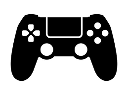
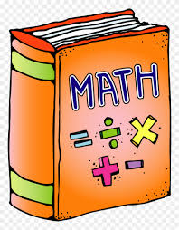
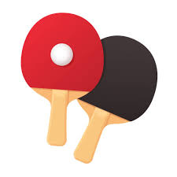

In my free time, I like to play video games. Recently I’ve been playing a lot of Slay the Spire 2, but I usually play FPS, story games and souls-likes. I tend to have a good amount of free time since my classes don’t give a lot of homework or I finish the homework in class. I mostly play on PC, but my parents do have a Nintendo Switch we sometimes use. My computer isn’t the best, but it can run most things.

I like to do math, but mostly in school. I tried to do math competitions and study for them, but I never did well in them. I used to be part of the math team but don’t go anymore, since I also didn’t know anyone there. In school however, I like to do it and find it fun, and I usually do well in it. I’m taking calc BC right now, and plan to finish all math classes at this school and a good amount at Mira Costa. I find calculus interesting because I can understand the subjects and they have some real world applications.

The only sport that I do outside of school is Table Tennis. I’ve been doing it for around a year and a half. I haven’t participated in any competitions, but I plan to. I tried to do tennis, but I find table tennis more fun because of its faster pace. I have a private lesson every Tuesday from 7-8 p.m.
